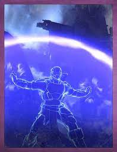
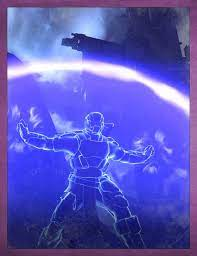

TITAN VOID
SUPERS
Void is considered the best subclass for Titans. A Titan that uses Void is called a Sentinel.
There are one of two supers to choose from.
Obliterate your enemies and protect yourself from their blasts with the Sentinal Shield.
 Form a Void shield that can bash enemies in melee range and be thrown from a distance as a projectile.
This Super deals lots of damage, but it can also protect. When you bring your shield up to protect you, however, it creates a large expansion of void that blocks all shots.
This helps a lot if you are trying to bring your teamates through enemy lines.
Need more cover?
When Super energy is full, press and hold to create a shielding dome called the Ward of Dawn.

This shield protects you and your enemies from all directions, and the only way for an enemy to kill you is to go inside, which is very dangerous because if they go inside they will be met with a flurry of punches and gunshots.
It can block other players' Supers and heavy weapons too, making this a very useful Super.
Form a Void shield that can bash enemies in melee range and be thrown from a distance as a projectile.
This Super deals lots of damage, but it can also protect. When you bring your shield up to protect you, however, it creates a large expansion of void that blocks all shots.
This helps a lot if you are trying to bring your teamates through enemy lines.
Need more cover?
When Super energy is full, press and hold to create a shielding dome called the Ward of Dawn.

This shield protects you and your enemies from all directions, and the only way for an enemy to kill you is to go inside, which is very dangerous because if they go inside they will be met with a flurry of punches and gunshots.
It can block other players' Supers and heavy weapons too, making this a very useful Super.
GRENADES
There are three grenades to choose from.
Magnetic Grenade — An explosive grenade that attaches to enemies and detonates twice.
Voidwall Grenade — A grenade that creates a horizontal wall of burning Void energy.
Suppressor Grenade — An explosive grenade that temporarily suppresses enemy abilities.
Visit Ikora Rey in the Tower to unlock more grenades.